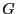
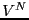

Next: Monte Carlo Simulation
Up: Statistical Mechanics: A Brief
Previous: Entropy and Temperature
Section 2.2 of Frenkel & Smit [1] discusses a
derivation of the ``quasi-classical'' representation of the canonical
partition function,
:
is the Hamiltonian
function which computes the energy of a point in phase space. The
derivation of Eq. 42 is not repeated here. What is
important is that the probability of a point in phase space is
represented as
So, the general ``sum-over-states' ensemble average of quantum
statistical mechanics, first presented in
Eq. 1, becomes an integral over phase space in
classical statistical mechanics:
where
is the value of the
observable  at phase space point
. Before moving on, it is useful to recognize that
we normall simplify this ensemble average by noting that, for a
system of classical particles, the usual choice for the Hamiltonian
has the form
where  is the kinetic energy, which is only a function of
momenta, and
is the kinetic energy, which is only a function of
momenta, and  is the potential energy, which is only a
function of position. The canonical partition function,
is the potential energy, which is only a
function of position. The canonical partition function,  , can in
this case be factorized:
, can in
this case be factorized:
The quantity in the left-hand braces is the ideal gas partition
function, because it corresponds to the case when the potential
is 0. (Note that we have multiplied and divided by
; this is the equivalent of scaling the positions in the
integration over positions.) The quantity in the right-hand braces
is called the configurational partition function,  .
.
Because the kinetic energy has the simple form,
where is the mass of particle  , the integral over particle
momenta can be evaluated analytically:
, the integral over particle
momenta can be evaluated analytically:
|
 |
|
(50) |
| |
|
|
(51) |
(We have assumed all particles have the same mass,  ; in the case
of distinct masses, this is just a product of similar factors.)
; in the case
of distinct masses, this is just a product of similar factors.)
becomes
|
|
|
(52) |
|
|
|
(53) |
where is the de Broglie wavelength.
So, when the observable is a function of positions only, the
ensemble average becomes a configurational average:
Note that the integation over momentum yields a factor in
both the numerator and denominator, and thus divides out. We can write
this configurational average using a probability distribution,  ,
as
,
as
where
is called the ``canonical probability distribution.'' As pointed out
on p. 15 of Frenkel & Smit [1],
Eq. 54 is ``the starting point for virtually all
classical simulations of many-body systems''; that is, it is the
starting point for all simulations discussed in this course.
Next: Monte Carlo Simulation
Up: Statistical Mechanics: A Brief
Previous: Entropy and Temperature
cfa22@drexel.edu